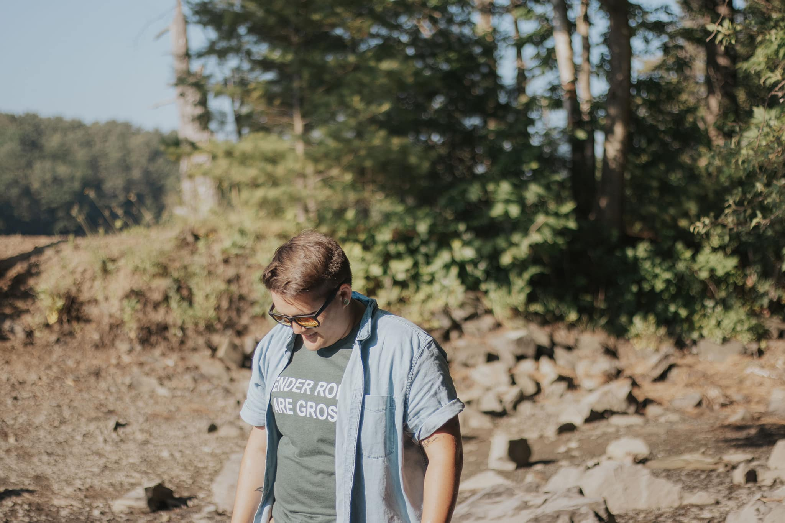

About Me

Hi, I'm Liza!
I'm an artist, educator, and creative problem-solver living in Maine. I currently work at a Montessori school, where I help support teachers, families, and students while juggling a little bit of everything behind the scenes.
When I'm not at work, I'm usually making art. I love painting, printmaking, drawing strange little characters, and building interactive projects like art vending machines. My work often explores themes of nature, imagination, identity, and finding wonder in everyday things. I enjoy creating art that feels playful, thoughtful, and a little weird.
Outside of art, I love spending time outdoors, whether that's hiking, exploring new places, or just enjoying nature. I also enjoy spending time with my wife and our yellow lab, Oswald, who is always ready for an adventure. I'm currently working toward my master's degree in web design and digital communication, and I'm excited to learn more about design, coding, and the many ways creativity and technology can work together.
Connect With Me